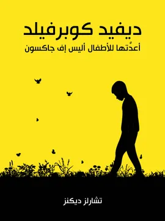

ديفيد كوبرفيلد: أعدَّتها للأطفال أليس إف جاكسون

قراءة عربية أصلية محددة النطاق في الصفحات 9 إلى 14 من ملف PDF المرتبط، وليست تلخيصا كاملا للكتاب. نناقش ما تدعمه هذه المقاطع فقط.
ولادة ديفيد كوبرفيلد وغضب الآنسة بيتسي
تصيح الآنسة بيتسي بأن تحضر بيجوتي الشاي لأن سيدتها متعبة، ثم تسأل الأم الصغيرة هل كان السيد كوبرفيلد طيبًا معها، فتجيب بأنهما كانا سعيدين. في تلك الليلة يولد ديفيد، ويخرج الطبيب السيد تشيليب، وهو قصير القامة، إلى الردهة ليحدث الضيفة الغريبة. تسأله عن حال الأم ثم عن حال المولودة، فيجيبها بأنه صبي. فتضرب رأسه بقبعتها من أشرطتها كما يمسك المرء مقلاعًا، ثم تخرج ولا تعود، لأن المولود لم يكن بنتًا. بعدها يصف الراوي سنوات ديفيد الأولى السعيدة مع أمه وبيجوتي، وفناء المطبخ الخلفي.
زاوية وحدود القراءة
قراءة موجزة من ص ٩ إلى ص ١٤ من أصل ١٣٠ صفحة، تعرض مطلع الفصل الأول عن ولادة ديفيد وطفولته، لا الكتاب كاملًا.
الطبعة والقراءة
هذه الترجمة العربية صادرة ومتاحة مجانًا من مؤسسة هنداوي بشكل قانوني؛ حيث إن نص العمل الأصلي يقع في نطاق الملكية العامة تبعًا لقوانين الملكية الفكرية.
تنزيل PDF المجاني ↓ القراءة والمصدر الرسمي ↗